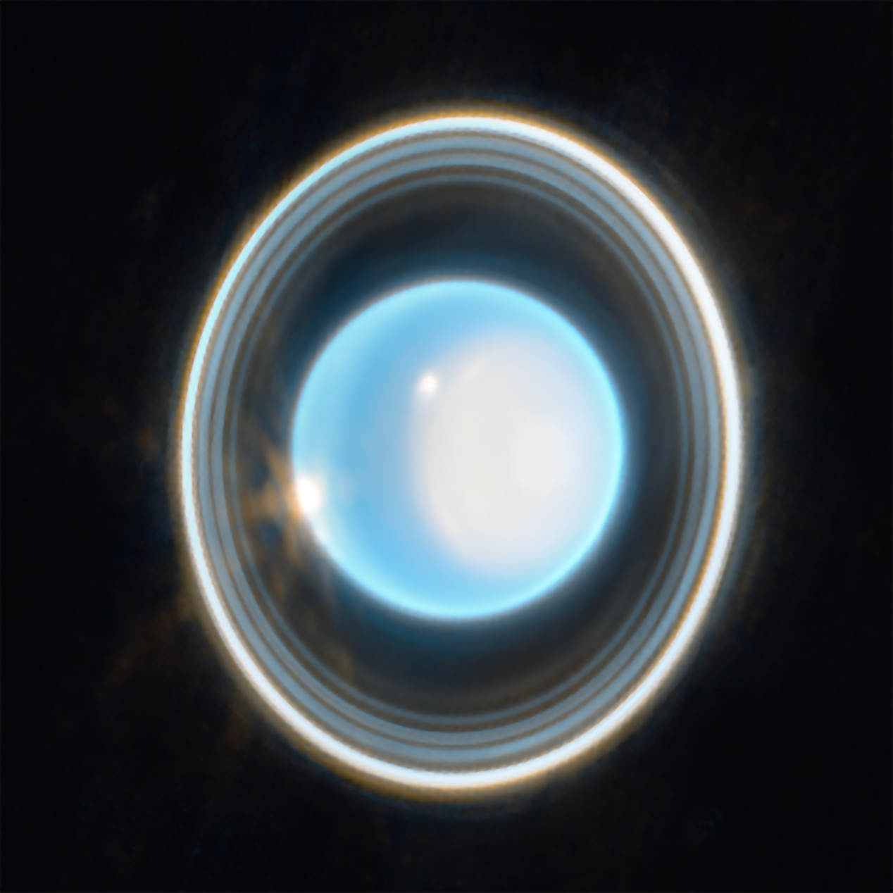

Index
Mercury
Venus
Earth
Mars
Jupiter
Saturn
Uranus
Neptune

Uranus
Uranus is one of the two ice giants in our solar system. It's the second-farthest planet from the Sun. Uranus is made up of water, ammonia, and methane. The methane gives it its blue color.
Facts
- Uranus is the coldest planet in the solar system. On average, the temperatures on Uranus are -320° F. However, temperatures can reach as low as -371° F.
- Uranus has 28 moons.
- A day on Uranus is 17 hours and 14 minutes and a year on Uranus takes 84 years.
- Similar to the other 3 giant planets, Uranus has no solid surface, meaning it would be impossible to stand on it.
- It is extremely difficult to see Uranus. You would need a telescope to see it.
- Due to it being difficult to see, it's one of the two planets that have been more recently discovered compared to the other planets throughout human history. All of the other planets were discovered in ancient times, however Uranus was discovered in the 1781 by William Herschel in Great Britain.
- Uranus has a faint set of 13 rings.
- It is the only planet that spins on its side. People theorize that it is due to another planet possibly colliding with it.
- Like Venus, Uranus also spins in the opposite direction than the other planets.
- It has only been visited by a spacecraft known as Voyager 2.
- Although William Herschel, the person that discovered Uranus, tried to name it George after King George III, the attempt failed and was named Uranus, the Greek god of the sky, instead.
Learn more about Uranus Here
JPL (NASA)

NASA, ESA, CSA, STScI; Image Processing: Joseph DePasquale (STScI)